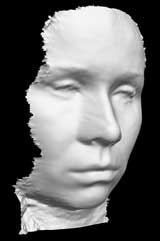
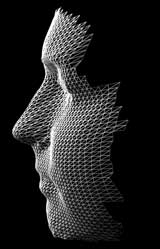
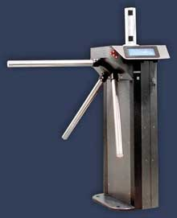

По материалам НПО "Информация".
Биометрические технологии идентификации, имеющие ряд преимуществ перед традиционными средствами, становятся в последнее время все более актуальными и популярными. Как известно, под биометрией понимают методы автоматической идентификации человека и подтверждения личности, основанные на физиологических или поведенческих характеристиках. Три основных биометрических метода, применяемых в настоящее время на практике, - это распознавание по отпечаткам пальцев, по радужной оболочке глаза и по изображению лица.
Преимущества биометрических систем безопасности очевидны. Уникальные человеческие качества хороши тем, что их трудно подделать, трудно оставить фальшивый отпечаток пальца при помощи своего собственного или сделать радужную оболочку своего глаза похожей на чью-то другую. В отличие от бумажных идентификаторов (паспорт, водительское удостоверение или иное удостоверение личности), от пароля или персонального идентификационного номера (ПИН), биометрические характеристики невозможно забыть или потерять. Кроме того, в силу своей уникальности они используются для предотвращения воровства или мошенничества.
Методы распознавания по изображению лица могут работать с двухмерным или с трехмерным изображением (так называемые 2D- и 3D-фото). Стоит отметить, что идентификация человека по чертам лица - одно из самых динамично развивающихся направлений в биометрической индустрии. Привлекательность данного метода основана на том, что он наиболее близок к тому, как люди обычно идентифицируют друг друга. Распространение мультимедийных технологий, благодаря которому все чаще можно встретить видеокамеры, установленные на городских улицах и площадях, на вокзалах, в аэропортах и других местах скопления людей, определило развитие этого направления.
Распознавание лица предусматривает выполнение любой из следующих функций: аутентификация (установление подлинности "один в один") или идентификация (поиск соответствия "один из многих"). Система автоматически оценивает качество изображения для опознания лица и, если необходимо, способна его улучшить. Она также создает изображение лица из сегментов данных, генерирует цифровой код или внутренний шаблон, уникальный для каждого индивидуума.
Биометрические технологии призваны обеспечить повышение надежности и эффективности сверки документов, а также предназначены для электронного документирования (логирования) всех сверок. При решении этой задачи возможны два сценария: двойная или тройная верификация. Двойная верификация подразумевает сверку биометрического шаблона, записанного в электронном паспорте или визе, с биометрическими характеристиками проверяемого субъекта. Тройная верификация, в свою очередь, предполагает дополнительную сверку двух указанных характеристик с шаблоном, хранящимся в общегосударственном регистре биометрических данных. При этом сценарии любая попытка подделки документа становится бессмысленной, поскольку тройная верификация выявит несоответствие с шаблоном, записанным в государственный регистр при выдаче документа. Такая тройная проверка включена в рекомендации международной организации гражданской авиации ICAO по применению биометрических систем, но этот вариант требует, чтобы сначала была создана государственная инфраструктура, поддерживающая запросы на верификацию личности по биометрическим данным.
Еще одна задача, связанная в основном с выдачей паспорта или визы, заключается в проверке того факта, что аналогичный документ не выдавался ранее гражданину с теми же биометрическими данными, но проходившему под другим именем, а также в сверке биометрических данных гражданина с базами данных оперативных и специальных служб. И в том и в другом случае решение задачи предполагает использование биометрических методов в режиме идентификации, при этом размер баз данных может быть очень большим. Для решения первой задачи (двойной и тройной верификации) допускается использовать любой из трех методов (по фотографии лица, по отпечаткам пальцев или радужной оболочке), которые дают приемлемую точность. Для решения второй задачи (идентификации гражданина по большой базе данных) необходимы комбинированные методы.
По мнению экспертов, наиболее обоснованное решение при внедрении биометрических методов - это первичный сбор и занесение в единый государственный регистр, а также в электронные идентификационные документы как дактилоскопической информации (с двух пальцев), так и двух изображений лица (двухмерного и трехмерного). При этом для решения задачи верификации, подразумевающей сверку документов при пересечении гражданами границ, достаточно комбинированного (2D+ +3D) метода распознавания лица. Этот бесконтактный метод обеспечивает максимальную измеряемость биометрической характеристики (иными словами, максимальную скорость верификации и прохода), следовательно, он не замедлит, а ускорит прохождение пассажиропотока через точки контроля. Точность 3D- и тем более комбинированного метода высока и отвечает всем требованиям в режиме верификации, а также в режиме идентификации с не очень большими (до 10 тыс. человек) оперативными базами данных (пример - список лиц, объявленных в розыск). Кроме того, использование обычной двухмерной фотографии - во-первых, общепринятая практика, во-вторых, позволяет оператору принять окончательное решение или провести визуальное сравнение с несколькими наиболее похожими индивидуумами из базы данных. Благодаря этому можно увеличить размер базы данных для оперативной идентификации до нескольких сотен тысяч человек.
Использование дактилоскопической информации предполагается только в момент проверки личности, до выдачи документа, а также при необходимости задержания гражданина и предъявлении обвинений. Это позволяет повысить уровень защиты данных, ограничив круг лиц, имеющих право доступа к записанной в паспорте дактилоскопической информации, только сотрудниками соответствующих правоохранительных служб.
Победа российского проекта
В январе этого года российский проект об изменении международного биометрического стандарта поддержали 30 стран мира. Это произошло в японском городе Киото на заседании Международного подкомитета по стандартизации в области биометрии при ISO, где и была утверждена первая версия проекта поправки к международному стандарту в области биометрии (ISO/IEC 19794-5). В редакторскую группу для работы над окончательным текстом стандарта вошли три эксперта, представляющие Россию, США и Германию.
В июле 2005 г. Федеральное агентство по техническому регулированию и метрологии РФ направило в Международный подкомитет по стандартизации в области биометрии при ISO официальное предложение, касающееся изменения международного стандарта в области биометрии. "Суть предлагаемой поправки заключается во включении трехмерного цифрового изображения лица, наряду с обычной двухмерной фотографией, в формат данных, предназначаемый для хранения, обмена и использования при автоматическом распознавании личности", - пояснил один из разработчиков поправки Дмитрий Повесьма, заместитель директора НПО "Информация", соредактор нового стандарта от России. Теперь, после утверждения проекта, под цифровым изображением лица будут понимать формат данных, включающий как обычную двухмерную, так и трехмерную фотографию (рис. 1).
|  | Рис. 1. Трехмерная фотография.
|
Ранее, в феврале нынешнего года, по инициативе компании A4Vision, поддержанной, в частности, Oracle, Motorola, Unisys, Logitech, аналогичная поправка к национальному стандарту была одобрена в США. Заметим, что компания A4Vision (http://www.a4vision.com), основанная нашими соотечественниками, первой разработала технологию трехмерного распознавания лиц и, выйдя на рынок США, инициировала процедуру изменения американского стандарта.
Трехмерная фотография - новейшая биометрическая технология, созданная отечественными разработчиками около пяти лет назад. Трехмерное фото, занимая всего 5 Кбайт, может быть записано в биометрический паспорт; оно увеличивает точность идентификации личности и повышает надежность автоматической сверки документов. Эксперты отмечают, что уровень распознавания трехмерной фотографии составляет более 90%, тогда как у двухмерного изображения этот показатель редко превышает 50%.
Стоит особо отметить, что это первая инициатива России по разработке международных стандартов не только в области биометрии, но и вообще в области высоких технологий. Именно поэтому ее рассматривают как очень важный и полезный прецедент, поддерживающий авторитет отечественных компаний, работающих в области высоких технологий. Кроме России, в скорейшем принятии нового стандарта на цифровое изображение лица заинтересованы США и Европейский союз. Как пояснил один из трех редакторов нового стандарта, представитель России, прецедент быстрого согласования международного стандарта на технологию распознавания по цифровому изображению лица объясняется тем, что цифровое изображение лица - это главная из трех так называемых "больших биометрик", которые могут служить для автоматического распознавания личности человека. Именно цифровое изображение лица было признано обязательным во всех странах для паспортно-визовых документов нового поколения, тогда как два других биометрических параметра - отпечатки пальцев и изображение радужной оболочки глаза - считаются дополнительными, и каждое государство может включать их в паспортно-визовые документы по своему усмотрению.
Международная рабочая группа работала над предложенным Россией документом на протяжении пяти месяцев. Все участники Киотской встречи встретятся вновь на заседании в Лондоне в июле этого года и внесут последние предложения. Новый стандарт, включающий трехмерную фотографию в формат данных цифрового изображения лица, может быть принят уже в следующем году. Это время согласовано с планом поэтапного внедрения биометрических паспортов нового поколения во многих странах. Так, в Германии и других странах Европы уже начали выдавать новые паспорта, но пока, на первом этапе программы, они содержат лишь отсканированную фотографию, отправленную заявителем по почте. В конце 2007 г. европейские страны предполагают перейти к следующему этапу, когда заявитель будет лично подавать документы на паспорт и проходить процедуру регистрации биометрических характеристик.
О необходимости введения трехмерной фотографии в формат данных для биопаспортов говорят и эксперты-криминалисты. Дело в том, что трехмерные (геометрические) данные лица напрямую связаны с антропометрическими характеристиками, уникальными для каждого человека, и более надежны в качестве признаков для компьютерных алгоритмов, чем привычные двухмерные фотографии. Вместе с тем традиционные двухмерные фотографии лучше интерпретируются оператором, призванным "вручную" перепроверить компьютер и принять окончательное решение при распознавании. Таким образом, включение трехмерной фотографии наряду с двухмерной в формат данных цифрового изображения лица существенно увеличит точность идентификации личности при допуске в помещения или при пересечении государственных границ и повысит надежность автоматической сверки документов. Кроме того, запись на микросхему в паспорте трехмерной фотографии владельца значительно облегчит задачу спасателей, судмедэкспертов и других специалистов, которые занимаются непростым делом идентификации погибших. Это особенно важно в связи с растущим количеством катастроф, стихийных бедствий, террористических атак и других случаев массовой гибели людей.
Трехмерное распознавание лиц, наряду с другими биометриками, проходит тщательное тестирование во многих странах мира. Результаты превзошли все ожидания: эта технология существенно увеличивает точность автоматического распознавания, а главное - не замедляет, а упрощает процедуру контроля на границе и при регистрации на авиарейс, существенно увеличивая надежность идентификации. В настоящее время множество крупных компаний как в России, так и за рубежом разрабатывают алгоритмы и камеры для трехмерного распознавания лица. Многие коммерческие и государственные потребители биометрических технологий (банки, аэропорты, ИТ-компании, государственные учреждения, общественные организации) заинтересованы в продвижении нового вида биометрики и включении его в международные стандарты.
Технология трехмерного распознавания лица (рис. 2) относительно нова, но, по различным оценкам, уже сейчас решения на ее основе разрабатывают и внедряют более 10 компаний по всему миру, в том числе и в России. Именно поэтому в первую очередь необходимо стандартизовать правила построения блока информации, содержащего биометрический шаблон, т. е. формат хранения и обмена данными. Ведь этот элемент обеспечивает взаимодействие между системами различных производителей, а обеспечение технической совместимости и взаимодействия - это и есть основные задачи стандартизации.
|  | Рис. 2. Построение трехмерной модели лица.
|
Биометрические системы НПО "Информация"
НПО "Информация" (http://www.npo-inform.com) - ведущий российский интегратор решений в области биометрических и интеллектуальных систем безопасности. Эта компания сочетает научно-технический потенциал опытного разработчика оптоэлектронных приборов и алгоритмов распознавания и гибкость оператора, сотрудничающего с большинством поставщиков биометрических технологий, представленных на российском рынке. Деятельность компании охватывает весь спектр применения систем безопасности: от интеграционных решений для малого и среднего бизнеса до участия в государственных программах.
Биометрические решения в созданных системах контроля и управления доступом (СКУД) способны значительно сократить стоимость оснащения проходной или двери функциями контроля доступа и учета рабочего времени за счет применения современных биометрических технологий и простых в монтаже устройств регистрации и распознавания. Любой продукт системы можно достаточно быстро интегрировать в любую ранее установленную СКУД, повышая тем самым эффективность без замены СКУД. Благодаря гибкой настройке системы можно разработать индивидуальный сценарий безопасности для оснащения целого объекта и его помещений в отдельности.
Биометрические решения позволяют вести учет рабочего времени сотрудников, контролировать потоки посетителей и обеспечивать четкий контроль доступа к охраняемым объектам, пропуская только специалистов с определенным уровнем допуска. СКУД НПО "Информация" применяются для ограничения доступа и учета рабочего времени в самых разнообразных организациях:
- офисах и бизнес-центрах;
- зданиях банков и банковских хранилищах;
- государственных организациях;
- лабораториях и на особо опасных участках производства;
- химических предприятиях, объектах военного назначения;
- служебных помещениях аэропорта (вокзала) и на летном поле;
- фитнес-центрах, больницах и медицинских центрах;
- образовательных учреждениях;
- квартирах, подъездах домов;
- стадионах, концертных залах, мобильных и стационарных выставках.
НПО "Информация" выпускает широкий спектр систем контроля и управления доступом для различных применений. Так, биометрический турникет ТБИ 1.3 (рис. 3) обеспечивает высокую степень защиты проходных без введения карточной системы. Он предназначен для проходных офисных центров, предприятий, банков, образовательных учреждений, медицинских центров, аэропортов, стадионов, правительственных зданий. Любой человек, проходящий через биометрический турникет, автоматически сравнивается с базой данных людей, которым разрешен вход. Доступ разрешен только в случае совпадения лица человека с его трехмерной фотографией в базе данных. Биометрический турникет автоматически фиксирует передвижения людей с разрешенным доступом на объект, гарантируя при этом подлинность личности, получившей разрешение на проход. Запись изображений лиц, которым отказано в доступе, позволяет вести статистический анализ и выявлять систематические попытки нарушений. На порядки увеличивается степень защиты карточных турникетов, в частности, обеспечивается защита от подделки, потери и кражи карт, а также от обмена ими (для получения доступа недостаточно просто иметь карту - необходимо подтвердить идентичность биометрических данных). Стоит отметить, что в этом случае отсутствует фактор усталости охранника при большом потоке людей. Кроме того, невозможно загримироваться и воспользоваться чужими документами.
|  | Рис. 3. Биометрический турникет производства НПО "Информация".
|
Повышение требований к обеспечению безопасности и взаимодействию различных технологий особенно ощутимо в банковской сфере. Биометрические продукты компаний НПО "Информация" и A4Vision, основанные на технологии распознавания по трехмерному изображению лица, эффективно применяются в банковском секторе. Такая система установлена, например, в одном из европейских банков, входящих в пятерку крупнейших. Комплексное решение для банков, в частности, позволяет:
- снизить потери от мошенничества;
- повысить безопасность работы банковских учреждений;
- усилить контроль за действиями персонала;
- продемонстрировать клиентам надежность систем безопасности банка;
- повысить защищенность средств клиента.
"Кража личности" - одна из серьезных помех эффективной работе банковской системы. Сравнение трехмерной фотографии клиента с биометрическими данными, хранящимися в базе данных или на карточке, занимает не более двух-трех секунд и позволяет убедиться, что операции совершаются именно владельцем счета. При этом клиенты банка получают надежную гарантию, что злоумышленники не смогут воспользоваться их банковскими документами даже в случае утери или кражи таких документов.
Не секрет, что системы контроля и управления доступом, применяемые в банках, должны быть особенно надежными. Предлагаемые НПО "Информация" биометрические решения встраиваются в существующую СКУД и на порядки снижают вероятность несанкционированного прохода даже в случаях подделки документов или использования грима. Заметим, что системы трехмерного распознавания позволяют различать даже близнецов.
Биометрические системы контроля доступа к ПО могут интегрироваться с большинством программных приложений и существенно снижают риски несанкционированных действий, связанных с передачей или перехватом паролей, передачей электронных ключей и т. п. При этом системы распознавания по лицу автоматически фиксируют биометрические данные как сотрудников, получающих доступ к выполнению операций, так и злоумышленников, пытающихся совершить несанкционированные действия, что создает надежную доказательную базу.
Регистрация биометрических данных при оформлении кредита позволяет банкам и бюро кредитных историй идентифицировать клиента и оценить его кредитную историю независимо от смены документов, фамилии и места проживания.
Несмотря на то, что владелец банковской карточки несет полную ответственность за все операции, подтвержденные ПИН-кодом, многие банки внедряют банкоматы со встроенными биометрическими сканерами. Биометрическая верификация клиента исключает возможность получения наличных другим лицом. Банкам такая услуга обеспечивает конкурентное преимущество (защищенность средств клиента) и доход от продажи клиентам дополнительного сервиса. Технология бесконтактна, не унижает достоинства человеческой личности, надежна и удобна в использовании для сотрудников банка и его клиентов.
В настоящее время большинство государств готово к созданию биометрических удостоверений личности: паспортов, водительских удостоверений, социальных карт, военных билетов и т. п. По сравнению с традиционными такие документы позволяют надежно установить, является ли предъявитель документа его истинным владельцем, повысить защищенность документов от подделки, автоматизировать работу сотрудников контрольно-пропускных пунктов, ускорить и облегчить процедуры проверки документов.
Международная организация по гражданской авиации (ICAO) и Международная организация по стандартам (ISO) ввели дополнительные требования к фотографиям на документах, которые облегчают использование систем автоматического распознавания. Разработанная НПО "Информация" кабина регистрации биометрической информации КРБИ 1.1 позволяет получать двухмерные фотографии, полностью соответствующие этим требованиям. Она выпускается в трех модификациях:
- для регистрации биометрических данных с участием оператора;
- для работы без оператора в составе локальной сети учреждения, выдающего удостоверения личности;
- для автономной работы, например, в коммерческой фотостудии.
Кабина укомплектована цветной цифровой камерой; трехмерным сканирующим устройством, позволяющим контролировать положение головы в кадре и регистрировать трехмерную фотографию лица; специальной осветительной системой; аудио- и видеоинтерфейсом, помогающим пользователю занять правильное положение; и ПО, которое контролирует качество регистрируемых биометрических параметров и выполняет их предварительную обработку. Дополнительно кабина может быть оборудована сканерами отпечатков пальцев и радужной оболочки, фотопринтером и принтером квитанций.